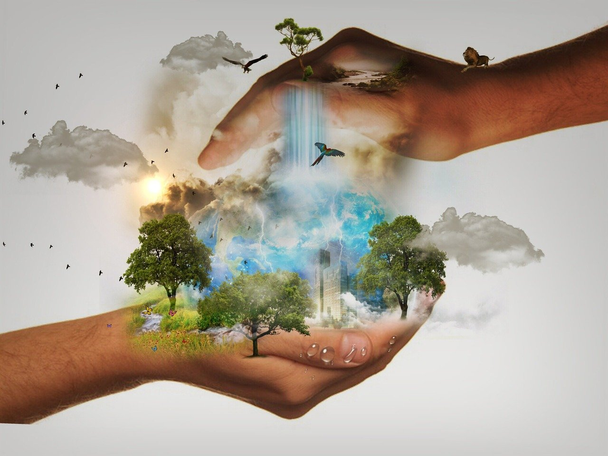

Introducción
A lo largo de la historia el ser humano ha utilizado el diseño y la construcción para crear productos, objetos o herramientas que le han permitido vivir y prosperar.
En la época en que vivimos ya no podemos crear y construir, teniendo en cuenta los parámetros clásicos, debemos ser lo más respetuosos con el Medio Ambiente y contribuir a su preservación desde todos los ámbitos.

¿ Cuál va a ser nuestra aportación con esta secuencia didáctica?
| El departamento de tecnología ha propuesto la construcción de una carpeta sostenible para el nivel de 2ºESO |